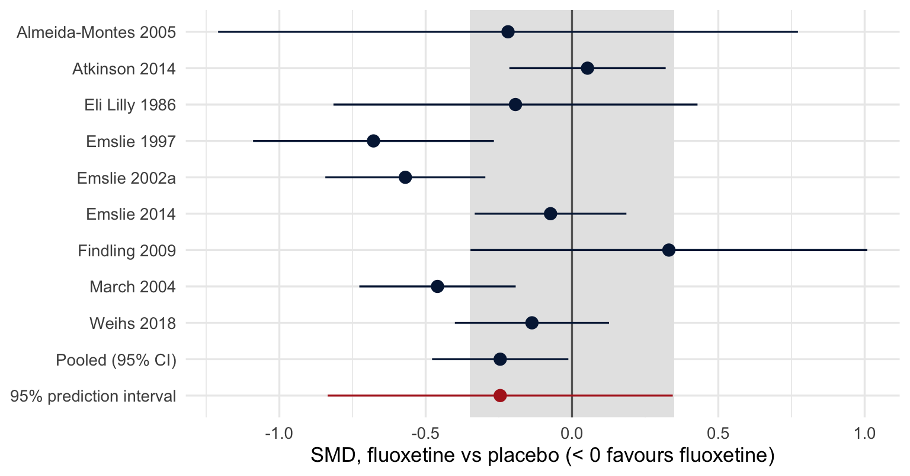
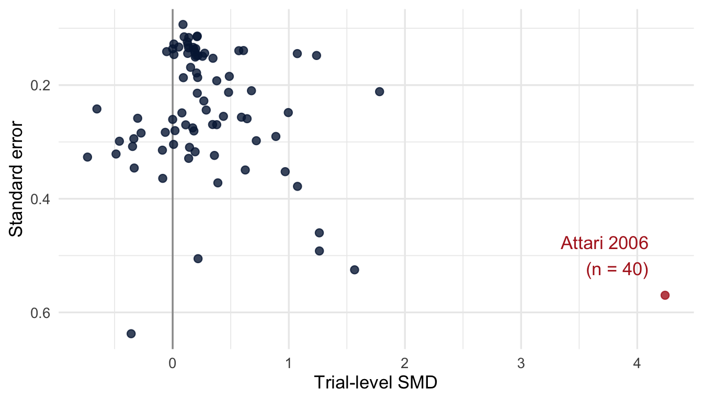
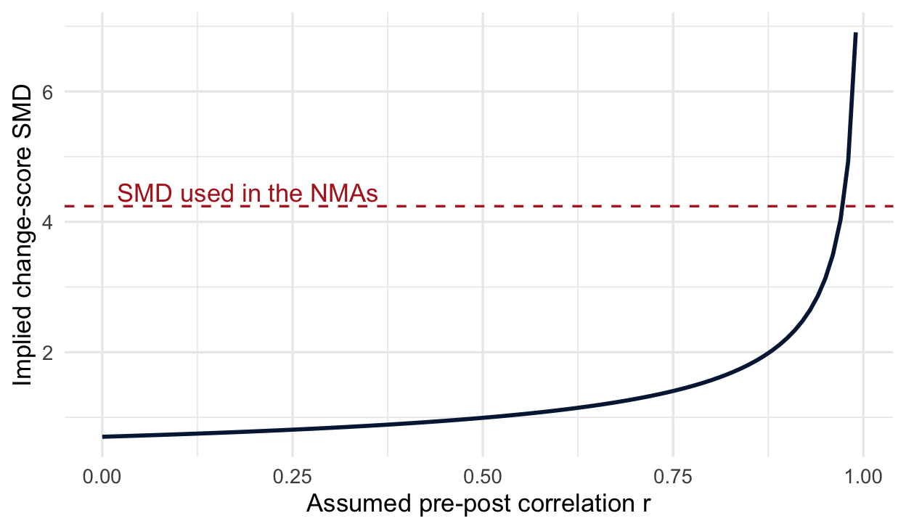

attempt to reproduce a published network meta-analysis from its shared data, and recognise when the shared data cannot be right;
fit an arm-level NMA of standardised mean differences with metafor, and explain why arm-level and contrast-level analyses can weight an outlying trial differently;
apply, in sequence, the checks taught in earlier chapters: prediction intervals, node-splitting, outlier plots, leave-one-out analysis, trustworthiness, fragility, and sensitivity analysis;
show how an implausible change-score SMD can arise from implausibly small standard deviations, and correct it with an ANCOVA-type estimate;
report posterior probabilities of clinically important effects instead of rankings, and judge whether an NMA supports a guideline recommendation.
R packages:dplyr, tidyr, purrr, readr, ggplot2, metafor, knitr; brms for code shown but not run here.
Chapter 17 introduced the tools of network meta-analysis. This chapter applies them, and the tools of earlier chapters, to one influential NMA. (1) combined 71 trials (9,510 children and adolescents with depressive disorders) of 16 antidepressants, seven psychotherapies and five combinations, and concluded that “fluoxetine (alone or in combination with CBT) seems to be the best choice” for acute treatment. With an earlier NMA restricted to antidepressants (2), it underpins guideline recommendations of fluoxetine as first-line medication. In 2026 a re-appraisal traced a discrepancy between these NMAs and a Cochrane NMA (3) to a single 40-patient trial (4). The question for this chapter is whether the checks in this book, all available in 2016, would have found the problem earlier.
18.1 The paper
Zhou and colleagues estimated, for each treatment, the standardised mean difference (SMD) in change of depressive symptoms against pill placebo, with a Bayesian random-effects NMA, a common heterogeneity variance across comparisons, rankings by SUCRA, and certainty rated with CINeMA (5). Every rating scale scores higher for more depression, so changes are negative and an SMD below zero favours the treatment. They reported significant global inconsistency in the efficacy network, rated most comparisons “very low” confidence, and noted that the loop formed by fluoxetine, nortriptyline and pill placebo was inconsistent; neither its cause nor an analysis without the trials that created it was reported.
Code
published <- tibble::tribble( # Zhou et al., Figure 4A (SMD vs pill placebo)~treat, ~smd, ~lo, ~hi,"Fluoxetine+CBT", -0.73, -1.39, -0.07, "Fluoxetine", -0.51, -0.84, -0.18,"Nortriptyline", 1.14, 0.46, 1.81, "WL", 0.99, 0.18, 1.79)
18.2 Can it be reproduced?
The authors shared arm-level data (mean change, SD and number for each arm of 70 trials in the efficacy network), to their credit. The analysis model can be written as an arm-level NMA: each arm’s mean change is divided by its trial’s pooled SD, and the model fits every arm with a fixed trial intercept, so that treatment differences are formed within trials:
with arm-level variances \(1/n_{ik}\). This is the model behind the SMD link of the gemtc package used by both Lancet NMAs. In metafor it is a multilevel model with trial as a fixed factor and arm as a random effect. The helper functions below are adapted from the code that (4) made public.
Code
arm_data <-function(arms, ref) { arms |>mutate(.by = study, sd_pool =sqrt(sum((n -1) * sd^2) / (sum(n) -n()))) |>mutate(y = mean / sd_pool, v =1/ n, se =sqrt(v),trt =gsub("[^A-Za-z0-9]", "", treat),trt =relevel(factor(trt), gsub("[^A-Za-z0-9]", "", ref)),study =factor(study), arm =paste(study, trt))}nma_freq <- \(ad) rma.mv(y, v, mods =~0+ study + trt, random =~1| arm, data = ad)nma_tau <- \(fit) sqrt(2* fit$sigma2)nma_effects <-function(fit, ad) { # each treatment vs the reference, with 95% PI b <-coef(fit); keep <-startsWith(names(b), "trt"); tau2 <-2* fit$sigma2 tibble::tibble(trt =sub("^trt", "", names(b)[keep]), est = b[keep],se =sqrt(diag(vcov(fit)))[keep]) |>mutate(lo = est -1.96* se, hi = est +1.96* se,pi_lo = est -1.96*sqrt(se^2+ tau2), pi_hi = est +1.96*sqrt(se^2+ tau2)) |>left_join(distinct(ad, trt =as.character(trt), treat), by ="trt")}nma_contrast <-function(fit, A, B) { # network estimate of A vs B b <-coef(fit); cv <-setNames(rep(0, length(b)), names(b))if (paste0("trt", A) %in%names(b)) cv[paste0("trt", A)] <-1if (paste0("trt", B) %in%names(b)) cv[paste0("trt", B)] <--1c(est =sum(cv * b), var =as.numeric(t(cv) %*%vcov(fit) %*% cv))}node_split <-function(ad, fit, A, B) { # direct vs back-calculated indirect evidence A <-gsub("[^A-Za-z0-9]", "", A); B <-gsub("[^A-Za-z0-9]", "", B) dd <- ad |>filter(.by = study, all(c(A, B) %in% trt)) |>filter(trt %in%c(A, B)) |>mutate(trt =relevel(droplevels(trt), B), study =droplevels(study)) form <-if (nlevels(dd$study) >1) ~0+ study + trt else~ trt fd <-rma.mv(y, v, mods = form, random =~1| arm, data = dd, sigma2 = fit$sigma2) dir <-coef(fd)[[paste0("trt", A)]]; vdir <-vcov(fd)[paste0("trt", A), paste0("trt", A)] net <-nma_contrast(fit, A, B) vind <-1/ (1/ net[["var"]] -1/ vdir) ind <- (net[["est"]] / net[["var"]] - dir / vdir) * vind tibble::tibble(comparison =paste(A, "vs", B), k_direct =n_distinct(dd$study),direct = dir, se_dir =sqrt(vdir), indirect = ind, se_ind =sqrt(vind),network = net[["est"]], p =2*pnorm(-abs((dir - ind) /sqrt(vdir + vind))))}
Analysed exactly as posted, the data give fluoxetine versus placebo an SMD of -0.08 (-0.42 to 0.27), not the published −0.51 (−0.84 to −0.18). Comparing the posted file with a version in which every arm assignment was checked against the trial reports (4) shows why: 37 of 70 trials have results attached to the wrong arm, including 33 of the 33 trials with a pill-placebo arm. Means, SDs and numbers move together, a systematic ordering error in the shared file rather than random typing errors. With the corrected data the published estimates are reproduced.
Code
draws <-read_csv("data/ch18/zhou_draws.csv", show_col_types =FALSE)d_full <-filter(draws, fit =="zhou_full")bq <-function(d, t, pred =FALSE) { x <- d[[paste0("b_trt", gsub("[^A-Za-z0-9]", "", t))]]if (pred) { set.seed(629); x <- x +rnorm(length(x), 0, sqrt(2) * d$sd_arm__Intercept) }fmt_ci(median(x), quantile(x, 0.025), quantile(x, 0.975))}e1 <-nma_effects(f1, ad1)published |>transmute(Treatment = treat, Published =fmt_ci(smd, lo, hi),`Frequentist (metafor)`=map_chr(treat, \(t) with(filter(e1, treat == t), fmt_ci(est, lo, hi))),`Bayesian (brms)`=map_chr(treat, \(t) bq(d_full, t)),`95% prediction interval (brms)`=map_chr(treat, \(t) bq(d_full, t, pred =TRUE))) |>kable(align ="lcccc")
Table 18.1: Reproducing Zhou et al.: published estimates, the frequentist arm-level NMA (metafor), and the Bayesian version (brms posterior draws). SMD vs pill placebo; the prediction interval is for a new trial.
Treatment
Published
Frequentist (metafor)
Bayesian (brms)
95% prediction interval (brms)
Fluoxetine+CBT
-0.73 (-1.39 to -0.07)
-0.73 (-1.38 to -0.08)
-0.75 (-1.42 to -0.06)
-0.75 (-1.99 to 0.48)
Fluoxetine
-0.51 (-0.84 to -0.18)
-0.50 (-0.82 to -0.18)
-0.50 (-0.85 to -0.17)
-0.50 (-1.57 to 0.59)
Nortriptyline
1.14 (0.46 to 1.81)
1.19 (0.52 to 1.86)
1.19 (0.48 to 1.84)
1.20 (-0.06 to 2.41)
WL
0.99 (0.18 to 1.79)
1.03 (0.23 to 1.83)
1.01 (0.13 to 1.79)
1.00 (-0.33 to 2.30)
The Bayesian fits were run with brms on the course data; the chapter reads their saved posterior draws, so it does not need Stan to render. The model is:
Code
library(brms)nma_priors <-c(prior(normal(0, 10), class = b), prior(normal(0, 1), class = sd))b1 <-brm(y |se(se) ~0+ study + trt + (1| arm), data = ad1, prior = nma_priors,chains =4, iter =3000, warmup =1000, seed =629, control =list(adapt_delta =0.95))
The estimated heterogeneity is large: τ = 0.49 SD units, about the size of fluoxetine’s whole effect. The paper reported credible intervals only; the prediction interval in Table 18.1, for the effect of fluoxetine in a new trial, runs from a large benefit to a moderate harm.
So the problems that follow are not coding errors. The posting error did not affect the authors’ own analysis; it made the analysis irreproducible for everyone else, and nobody (authors, reviewers or editors) checked that the shared file reproduced the paper (Section 1.1.3).
18.2.1 Arm-level or contrast-level?
The same data can be analysed at the contrast level: compute each trial’s SMD and its variance with escalc(), then pool the contrasts. The large-sample variance of an SMD is
The last term is negligible for ordinary effects, but not for an extreme one. The arm-level model omits it, so a trial with an extreme SMD is treated as more precise than it is.
Code
make_contrasts <-function(arms) { # each arm vs its trial's first arm arms |>mutate(.by = study, ref =first(treat), mref =first(mean), sref =first(sd),nref =first(n), N =sum(n), k =row_number()) |>filter(k >1) |>escalc(measure ="SMD", m1i = mean, sd1i = sd, n1i = n, m2i = mref, sd2i = sref, n2i = nref, data = _)}contr <-make_contrasts(arms)att_c <-filter(contr, study =="Attari 2006")tau2_a <-2* f1$sigma2c(SMD = att_c$yi, `variance, arm-level`=1/20+1/20, `variance, contrast-level`= att_c$vi,`weight ratio, arm vs contrast`= (1/ (0.10+ tau2_a)) / (1/ (att_c$vi + tau2_a))) |>round(2)
SMD variance, arm-level
4.24 0.10
variance, contrast-level weight ratio, arm vs contrast
0.32 1.66
One trial stands out: Attari 2006, a 40-patient trial of fluoxetine against nortriptyline (6), with an SMD of 4.24 in favour of fluoxetine. Its variance is three times larger than the arm-level model assumes, and even after adding between-trial heterogeneity, it receives 1.7 times more weight in the arm-level model. It is the only trial comparing fluoxetine with nortriptyline, so it alone forms that side of the inconsistent loop. When a result depends on a technical modelling detail, look for the observation that makes the detail matter.
18.3 Applying the checks
The checks below were each taught in an earlier chapter. Zhou et al. ran one of them (node-splitting) but did not follow up on what it showed.
18.3.1 Prediction intervals
Code
pw <- arms |>filter(.by = study, all(c("Fluoxetine", "Pill-PBO") %in% treat)) |>reframe(.by = study,m1 = mean[treat =="Fluoxetine"], s1 = sd[treat =="Fluoxetine"], n1 = n[treat =="Fluoxetine"],m2 = mean[treat =="Pill-PBO"], s2 = sd[treat =="Pill-PBO"], n2 = n[treat =="Pill-PBO"]) |>escalc(measure ="SMD", m1i = m1, sd1i = s1, n1i = n1, m2i = m2, sd2i = s2, n2i = n2, data = _)pw_fit <-rma(yi, vi, data = pw, method ="REML", test ="knha"); pw_pr <-predict(pw_fit)bind_rows(as.data.frame(pw) |>transmute(label = study, est = yi, lo = yi -1.96*sqrt(vi), hi = yi +1.96*sqrt(vi), type ="Trial"), tibble::tibble(label =c("Pooled (95% CI)", "95% prediction interval"), est = pw_pr$pred,lo =c(pw_pr$ci.lb, pw_pr$pi.lb), hi =c(pw_pr$ci.ub, pw_pr$pi.ub), type =c("Pooled", "PI"))) |>mutate(label =factor(label, levels =rev(unique(label)))) |>ggplot(aes(est, label, colour = type)) +annotate("rect", xmin =-0.35, xmax =0.35, ymin =-Inf, ymax =Inf, fill ="grey90") +geom_vline(xintercept =0, colour ="grey40") +geom_pointrange(aes(xmin = lo, xmax = hi)) +scale_colour_manual(values =c(Trial ="#041E42", Pooled ="#041E42", PI ="#B22222"), guide ="none") +labs(x ="SMD, fluoxetine vs placebo (< 0 favours fluoxetine)", y =NULL)

Figure 18.1: Pairwise meta-analysis of the nine fluoxetine-placebo trials (direct evidence only; HKSJ confidence interval). Grey band: ±0.35 SD. Red: 95% prediction interval.
The direct evidence gives an SMD of -0.25 (-0.48 to -0.01), about half the network estimate, with a prediction interval of -0.83 to 0.34. The ±0.35 SD band is the margin of clinical equivalence pre-specified by (3) (±5 points on the CDRS-R, whose SD is about 14.5).
Table 18.2: Node-splitting in the fluoxetine-nortriptyline-placebo loop (frequentist back-calculation). SMD (SE); < 0 favours the first-named treatment.
Comparison
Direct trials
Direct
Indirect
Network
P (direct = indirect)
Fluoxetine vs PillPBO
9
-0.23 (0.18)
-1.82 (0.40)
-0.50
0.0003
Nortriptyline vs PillPBO
2
-0.15 (0.41)
4.05 (0.61)
1.19
< 0.0001
Nortriptyline vs Fluoxetine
1
4.33 (0.58)
0.13 (0.45)
1.69
< 0.0001
The nine randomised fluoxetine-placebo trials say about −0.23; the rest of the network, routed largely through nortriptyline, says about −1.8. The network estimate of −0.50 is a blend of incompatible sources. The Bayesian node-split, in which fluoxetine’s arms in trials that also randomised placebo get their own “direct” parameter, tells the same story:
Figure 18.2: Bayesian node-split, fluoxetine vs placebo: posterior distributions of the direct and indirect SMDs, with all trials and without Attari 2006.
18.3.3 Finding the trial
Code
as.data.frame(contr) |>mutate(se =sqrt(vi), attari = study =="Attari 2006") |>ggplot(aes(yi, se, colour = attari)) +geom_vline(xintercept =0, colour ="grey60") +geom_point(size =2.3, alpha =0.8) +annotate("text", x =4.1, y =0.5, hjust =1, colour ="#B22222", label ="Attari 2006\n(n = 40)") +scale_y_reverse() +scale_colour_manual(values =c(`FALSE`="#041E42", `TRUE`="#B22222"), guide ="none") +labs(x ="Trial-level SMD", y ="Standard error")

Figure 18.3: Every within-trial comparison in the network (each arm vs its trial’s first arm), by SMD and standard error. The sign reflects only which arm is listed first.
Looking at the data would have found it. So would a leave-one-trial-out analysis (Section 10.4.1), which drops each trial in turn with no suspect in mind:
Code
loo <-map_dfr(levels(ad1$study), \(s) { d <-filter(ad1, study != s) |>mutate(study =droplevels(study), trt =droplevels(trt))if (!all(c("Fluoxetine", "PillPBO") %in% d$trt)) return(NULL) f <-nma_freq(d); e <-nma_contrast(f, "Fluoxetine", "PillPBO") tibble::tibble(omitted = s, est = e[["est"]], tau =nma_tau(f),p_incons =node_split(d, f, "Fluoxetine", "Pill-PBO")$p)})others <-filter(loo, omitted !="Attari 2006"); att <-filter(loo, omitted =="Attari 2006")
Omitting any of the other 69 trials leaves the fluoxetine estimate between -0.57 and -0.44, τ between 0.44 and 0.50, and the inconsistency P below 0.001. Omitting Attari 2006 moves fluoxetine to -0.29, halves τ to 0.26, and removes the inconsistency (P = 0.19).
18.3.4 Is the trial trustworthy?
An outlier this extreme should prompt a trustworthiness assessment before the trial enters a synthesis. Lyus and colleagues applied the INSPECT-SR tool and found serious concerns (4): a single site, no ethics approval statement, registration or protocol; dropouts “replaced by new cases”; a reported P value that does not match the reported data; and change scores whose standard deviations (2.6 and 0.8 points on a 54-point scale) are implausibly small for a trial in which half of the fluoxetine group still met criteria for major depression. The authors, journal and publisher did not respond to queries.
The change-score SDs can be checked against the baseline and week-8 data that the trial reports, using the formula of Section 14.4.1:
Code
att <-list(bF =28.9, sbF =8.4, eF =17.9, seF =8.1, # CDI, mean (SD), 20 per armbN =28.4, sbN =8.7, eN =25.8, seN =8.6)sd_change <- \(sb, se, r) sqrt(sb^2+ se^2-2* r * sb * se)tibble::tibble(r =seq(0, 0.99, 0.01)) |>mutate(smd = ((att$bF - att$eF) - (att$bN - att$eN)) /sqrt((sd_change(att$sbF, att$seF, r)^2+sd_change(att$sbN, att$seN, r)^2) /2)) |>ggplot(aes(r, smd)) +geom_line(linewidth =1, colour ="#041E42") +geom_hline(yintercept =4.24, colour ="#B22222", linetype ="dashed") +annotate("text", x =0.02, y =4.45, hjust =0, colour ="#B22222", label ="SMD used in the NMAs") +labs(x ="Assumed pre-post correlation r", y ="Implied change-score SMD")

Figure 18.4: Attari 2006: the change-score SMD implied by the reported baseline and week-8 means and SDs, for each assumed pre-post correlation r. Only r ≈ 0.97 reproduces the SMD that entered both Lancet NMAs.
For depression scales, pre-post correlations are usually moderate, roughly 0.3 to 0.7, which gives an SMD around 1. An ANCOVA-type SMD, the week-8 difference adjusted for baseline and divided by the week-8 SD, barely depends on r:
Attari’s own binary outcome tells the same story. Response (no longer meeting criteria for major depression at week 8) was 10/20 on fluoxetine and 2/20 on nortriptyline. Converted to the SMD scale with \(d = \ln(OR)\sqrt 3/\pi\)(7), that is about 1.2, a quarter of the 4.24 used in the NMAs, and its fragility index (Section 10.5) is small:
Code
fragility_index <-function(e1, n1, e2, n2, alpha =0.05) { p <- \(a, c) fisher.test(matrix(c(a, n1 - a, c, n2 - c), 2))$p.valueif (p(e1, e2) >= alpha) return(NA_integer_) k <-0while (p(e1, e2) < alpha) { if (e1 / n1 < e2 / n2) e1 <- e1 +1else e2 <- e2 +1; k <- k +1 } k}fragility_index(10, 20, 2, 20)
[1] 2
18.3.5 Sensitivity analysis
Having diagnosed the problem, we compare two reasonable responses: correcting the trial (ANCOVA-type SMD with r = 0.5) and excluding it.
Table 18.3: Zhou et al. NMA, with Attari 2006 as published, corrected and excluded (frequentist arm-level NMA). SMD vs pill placebo.
Analysis
Fluoxetine
Fluoxetine 95% PI
Nortriptyline
τ
Inconsistency P
All trials (as published)
-0.50 (-0.82 to -0.18)
-1.51 to 0.51
1.19 (0.52 to 1.86)
0.49
0.0003
Attari corrected (ANCOVA)
-0.33 (-0.53 to -0.13)
-0.89 to 0.23
0.15 (-0.33 to 0.62)
0.27
0.0563
Attari excluded
-0.29 (-0.50 to -0.09)
-0.85 to 0.26
-0.13 (-0.71 to 0.45)
0.26
0.1928
Correcting or removing one 40-patient trial, 0.4% of the patients in the network, shrinks fluoxetine’s effect by a third or more, halves the heterogeneity, largely resolves the inconsistency, and turns nortriptyline from “worse than placebo” into “no different from placebo”.
Table 18.4: Bayesian NMA: fluoxetine vs pill placebo, with the posterior probabilities that the SMD is below 0 (any benefit) and below −0.35 (a clinically important benefit).
Analysis
SMD (95% CrI)
P(SMD < 0)
P(SMD < −0.35)
All trials (as published)
-0.50 (-0.85 to -0.17)
0.997
0.82
Attari corrected (ANCOVA)
-0.33 (-0.55 to -0.12)
1.000
0.44
Attari excluded
-0.30 (-0.51 to -0.08)
0.997
0.31
A benefit of fluoxetine over placebo is nearly certain under every analysis; a clinically important benefit is likely only when Attari 2006 is analysed as published.
Table 18.5: SUCRA and 95% rank intervals (among 32 treatments, 1 = best) for antidepressants in the Bayesian NMA.
Antidepressant
SUCRA, all trials
Rank, 95% interval
SUCRA, Attari excluded
Fluoxetine
0.78
3 to 16
0.74
Duloxetine
0.67
2 to 26
0.68
Venlafaxine
0.61
2 to 26
0.62
Mirtazapine
0.60
2 to 28
0.66
Citalopram
0.56
2 to 29
0.62
Escitalopram
0.55
2 to 29
0.61
Paroxetine
0.55
4 to 27
0.59
Sertraline
0.53
5 to 27
0.54
SUCRA compresses a distribution of ranks into one number. The rank intervals show that fluoxetine could plausibly lie anywhere from near the top to the middle of 32 treatments, and a treatment can be the best of a weak field.
18.4 The re-appraisal
Lyus and colleagues re-analysed the datasets of all three NMAs (4). The two Lancet NMAs included Attari 2006; the Cochrane NMA, restricted to newer-generation antidepressants, excluded it by design.
Table 18.6: Fluoxetine vs placebo in three NMAs, with and without Attari 2006, re-analysed with the arm-level NMA of this chapter (SMD, 95% CI).
NMA
Analysis
Fluoxetine vs placebo
Inconsistency P
Cipriani 2016
All trials
-0.51 (-0.97 to -0.06)
0.0033
Cipriani 2016
Attari excluded
-0.27 (-0.43 to -0.10)
0.7100
Zhou 2020
All trials
-0.50 (-0.82 to -0.18)
0.0003
Zhou 2020
Attari excluded
-0.29 (-0.50 to -0.09)
0.1928
Hetrick 2021
No Attari (by design)
-0.27 (-0.38 to -0.15)
0.6963
One trial explains the discrepancy. Without it, all three NMAs agree that fluoxetine’s advantage over placebo is about 0.2 to 0.3 SD, about 3 to 4 points on the CDRS-R, largely inside the pre-specified margin of clinical equivalence. The Cochrane NMA, independently, had reached the same conclusion in 2021 (3). The direct evidence on response, the outcome patients notice, tells the same story:
pred ci.lb ci.ub pi.lb pi.ub
1.3107 0.9772 1.7580 0.6595 2.6050
In the placebo-controlled fluoxetine trials, response was more frequent on fluoxetine, but the pooled risk ratio’s confidence interval (HKSJ) includes 1 and its prediction interval is wide.
18.5 From NMA to guideline
Would the guideline recommendation of fluoxetine as first-line medication have survived these checks? The certainty of evidence was already “very low” for most comparisons in both Lancet NMAs, the efficacy network showed significant inconsistency, and the prediction interval for fluoxetine included harm. Every one of the checks applied here (reproduce the analysis, report prediction intervals, investigate inconsistency rather than average over it, plot the data, leave one trial out, assess the trustworthiness of influential trials, and ask whether an effect is clinically important rather than merely non-zero) was available when the first NMA was published. A modest benefit of fluoxetine remains plausible; a recommendation resting on its ranking as “the best choice” does not.
The general lessons:
Reproduce before you trust. Shared data are only useful if someone checks that they reproduce the paper.
Inconsistency is a signal to investigate. A network estimate that blends incompatible direct and indirect evidence summarises nothing.
One small trial can dominate a network when it closes a loop, when its effect is extreme, and when the model underweights its uncertainty.
Check trustworthiness, not only risk of bias. Risk-of-bias tools assume the data are genuine.
Correct where possible, and show both. Report analyses with the trial corrected and excluded, and examine every conclusion, not only the headline estimate.
Key points
The shared data of an influential NMA did not reproduce it; with corrected arm assignments, the published estimates were reproduced exactly.
Arm-level SMD models omit the \(d^2/2N\) term of the SMD variance and so overweight trials with extreme effects.
A single 40-patient trial with an implausible SMD of 4.2, created by implausibly small change-score SDs, caused the network’s inconsistency, much of its heterogeneity and much of fluoxetine’s apparent effect.
Prediction intervals, node-splitting, outlier plots, leave-one-out analysis, trustworthiness assessment and fragility would each have flagged the problem.
Corrected or excluded, the trial’s removal brings three NMAs into agreement on a small effect, largely within the margin of clinical equivalence.
Rankings and “significant” network estimates did not convey this; posterior probabilities of clinically important effects do.
Exercises
Re-run tbl-nma-sens with the ANCOVA correction at r = 0.3 and r = 0.7. Which conclusions change?
Fit the contrast-level NMA (escalc() SMDs, then rma.mv() with the multi-arm covariance) and compare the fluoxetine estimate with the arm-level result, with and without Attari 2006.
Use node_split() for every comparison in the network with at least two direct trials. Are there other inconsistent loops?
From zhou_draws.csv, compute the probability that fluoxetine + CBT is better than fluoxetine alone by more than 0.2 SD, with and without Attari 2006.
Draft a two-sentence recommendation on fluoxetine for adolescent depression, with a certainty rating, from the analysis without Attari 2006.
Attari A, Yadollah Moghaddam F, Hasanzadeh A, Soltani M, Mahmoodi M. Comparison of efficacy of fluoxetine with nortriptyline in treatment of major depression in children and adolescents: A double-blind study. Journal of Research in Medical Sciences. 2006;11(1):24–30.